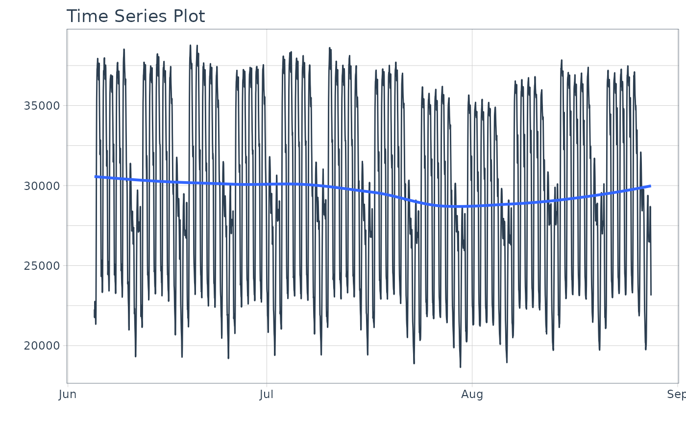
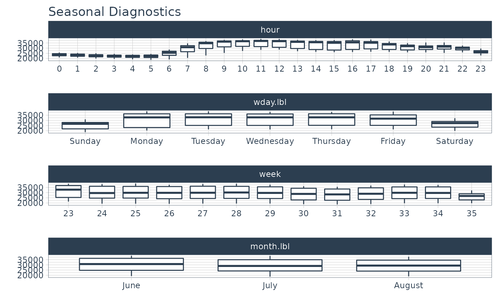
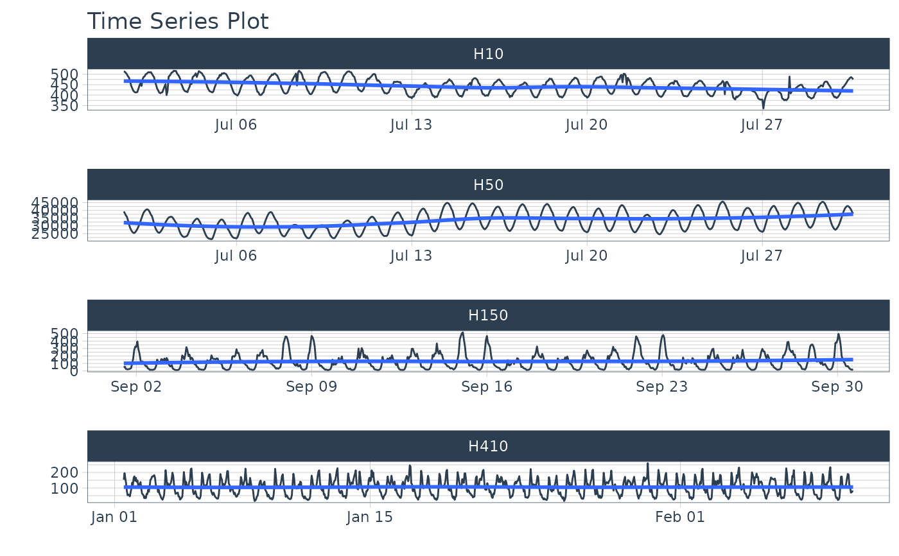
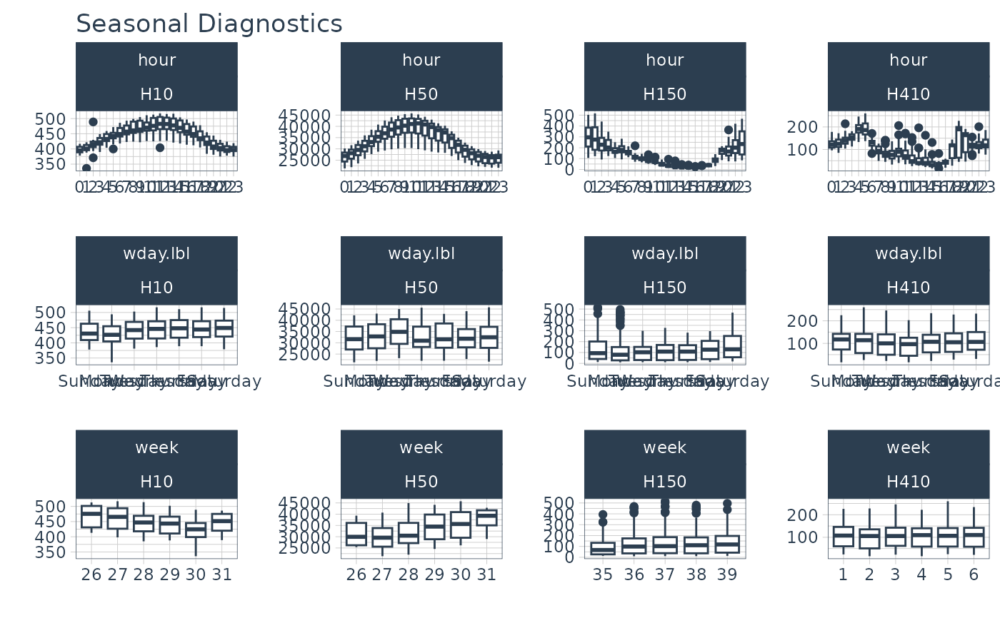

Visualize Multiple Seasonality Features for One or More Time Series
Source:R/plot-seasonal_diagnostics.R
plot_seasonal_diagnostics.RdAn interactive and scalable function for visualizing time series seasonality.
Plots are available in interactive plotly (default) and static ggplot2 format.
Usage
plot_seasonal_diagnostics(
.data,
.date_var,
.value,
.facet_vars = NULL,
.feature_set = "auto",
.geom = c("boxplot", "violin"),
.geom_color = "#2c3e50",
.geom_outlier_color = "#2c3e50",
.title = "Seasonal Diagnostics",
.x_lab = "",
.y_lab = "",
.interactive = TRUE
)Arguments
- .data
A
tibbleordata.framewith a time-based column- .date_var
A column containing either date or date-time values
- .value
A column containing numeric values
- .facet_vars
One or more grouping columns that broken out into
ggplot2facets. These can be selected usingtidyselect()helpers (e.gcontains()).- .feature_set
One or multiple selections to analyze for seasonality. Choices include:
"auto" - Automatically selects features based on the time stamps and length of the series.
"second" - Good for analyzing seasonality by second of each minute.
"minute" - Good for analyzing seasonality by minute of the hour
"hour" - Good for analyzing seasonality by hour of the day
"wday.lbl" - Labeled weekdays. Good for analyzing seasonality by day of the week.
"week" - Good for analyzing seasonality by week of the year.
"month.lbl" - Labeled months. Good for analyzing seasonality by month of the year.
"quarter" - Good for analyzing seasonality by quarter of the year
"year" - Good for analyzing seasonality over multiple years.
- .geom
Either "boxplot" or "violin"
- .geom_color
Geometry color. Line color. Use keyword: "scale_color" to change the color by the facet.
- .geom_outlier_color
Color used to highlight outliers.
- .title
Plot title.
- .x_lab
Plot x-axis label
- .y_lab
Plot y-axis label
- .interactive
If TRUE, returns a
plotlyinteractive plot. If FALSE, returns a staticggplot2plot.
Details
Automatic Feature Selection
Internal calculations are performed to detect a sub-range of features to include useing the following logic:
The minimum feature is selected based on the median difference between consecutive timestamps
The maximum feature is selected based on having 2 full periods.
Example: Hourly timestamp data that lasts more than 2 weeks will have the following features: "hour", "wday.lbl", and "week".
Scalable with Grouped Data Frames
This function respects grouped data.frame and tibbles that were made with dplyr::group_by().
For grouped data, the automatic feature selection returned is a collection of all features within the sub-groups. This means extra features are returned even though they may be meaningless for some of the groups.
Transformations
The .value parameter respects transformations (e.g. .value = log(sales)).
Examples
library(dplyr)
library(timetk)
# ---- MULTIPLE FREQUENCY ----
# Taylor 30-minute dataset from forecast package
taylor_30_min
#> # A tibble: 4,032 × 2
#> date value
#> <dttm> <dbl>
#> 1 2000-06-05 00:00:00 22262
#> 2 2000-06-05 00:30:00 21756
#> 3 2000-06-05 01:00:00 22247
#> 4 2000-06-05 01:30:00 22759
#> 5 2000-06-05 02:00:00 22549
#> 6 2000-06-05 02:30:00 22313
#> 7 2000-06-05 03:00:00 22128
#> 8 2000-06-05 03:30:00 21860
#> 9 2000-06-05 04:00:00 21751
#> 10 2000-06-05 04:30:00 21336
#> # … with 4,022 more rows
# Visualize series
taylor_30_min %>%
plot_time_series(date, value, .interactive = FALSE)

# Visualize seasonality
taylor_30_min %>%
plot_seasonal_diagnostics(date, value, .interactive = FALSE)

# ---- GROUPED EXAMPLES ----
# m4 hourly dataset
m4_hourly
#> # A tibble: 3,060 × 3
#> id date value
#> <fct> <dttm> <dbl>
#> 1 H10 2015-07-01 12:00:00 513
#> 2 H10 2015-07-01 13:00:00 512
#> 3 H10 2015-07-01 14:00:00 506
#> 4 H10 2015-07-01 15:00:00 500
#> 5 H10 2015-07-01 16:00:00 490
#> 6 H10 2015-07-01 17:00:00 484
#> 7 H10 2015-07-01 18:00:00 467
#> 8 H10 2015-07-01 19:00:00 446
#> 9 H10 2015-07-01 20:00:00 434
#> 10 H10 2015-07-01 21:00:00 422
#> # … with 3,050 more rows
# Visualize series
m4_hourly %>%
group_by(id) %>%
plot_time_series(date, value, .facet_scales = "free", .interactive = FALSE)

# Visualize seasonality
m4_hourly %>%
group_by(id) %>%
plot_seasonal_diagnostics(date, value, .interactive = FALSE)
